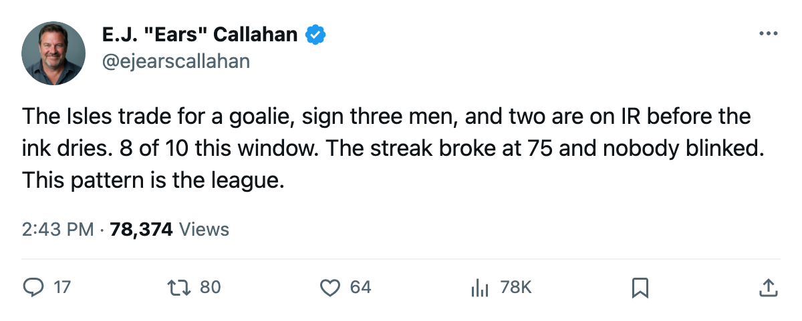
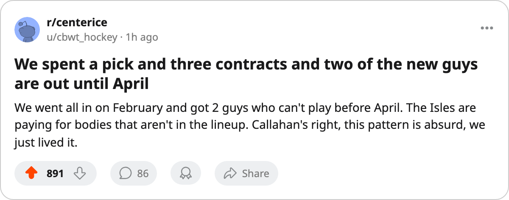

RUMOR METER: 8 of 10 New Signings Go to IR. The Streak Died at 75. The Hit Rate Lives. 🔥🔥
The Islanders spend a draft pick and three contracts chasing 8th in the East. Two of the three are already hurt.
 E.J. "Ears" CallahanInsider · The Hot Stove
E.J. "Ears" CallahanInsider · The Hot Stove

Signing-injury pattern: 8 of 10 in the current window

The league filed a trade between  Dallas Stars and
Dallas Stars and  New York Islanders on February 27. Three players and 1 pick change clubs. Dallas sends a goaltender to Long Island. The Islanders appear in the draft capital table as the holder of Dallas's 4th-round pick.
New York Islanders on February 27. Three players and 1 pick change clubs. Dallas sends a goaltender to Long Island. The Islanders appear in the draft capital table as the holder of Dallas's 4th-round pick.
The same date, three signings. Justin Papineau70 ($287,450) and  Mattias Weinhandl69 ($183,030) join the Islanders' roster and join the injured list within days. Papineau carries a shoulder, out until April 11. Weinhandl carries a wrist, out until March 18. The third signing cleared his medical. The streak broke at 75. The pattern kept counting.
Mattias Weinhandl69 ($183,030) join the Islanders' roster and join the injured list within days. Papineau carries a shoulder, out until April 11. Weinhandl carries a wrist, out until March 18. The third signing cleared his medical. The streak broke at 75. The pattern kept counting.
Eight of ten since the streak hit 75
Since this desk logged the signing-injury streak at 75 on February 25, the league has filed 10 new signings. Eight landed on the injured list. The streak restarted and reached 5 before a second signing cleared Anaheim's medical. A third run sits at 3:  Sergei Gonchar83,
Sergei Gonchar83,  Sami Kapanen82 and
Sami Kapanen82 and  Kris Draper77, all signed February 28, all hurt as of this edition.
Kris Draper77, all signed February 28, all hurt as of this edition.
| Signing | Club | Fee | Body part | Return |
|---|---|---|---|---|
| Justin Papineau | New York Islanders | $287,450 | Shoulder | 2005-04-11 |
| Mattias Weinhandl | New York Islanders | $183,030 | Wrist | 2005-03-18 |
| Ivan Majesky75 |  Atlanta Thrashers Atlanta Thrashers | $606,220 | Hip | 2005-03-08 |
 Trevor Linden79 Trevor Linden79 |  Vancouver Canucks Vancouver Canucks | $71,300 | Groin | 2005-04-13 |
 Richard Matvichuk75 Richard Matvichuk75 | Dallas Stars | $177,520 | Knee | 2005-03-23 |
| Sergei Gonchar |  Washington Capitals Washington Capitals | $162,580 | Back | 2005-03-19 |
| Sami Kapanen | Atlanta Thrashers | $256,370 | Hip | 2005-03-11 |
| Kris Draper |  Detroit Red Wings Detroit Red Wings | $366,960 | Elbow | 2005-03-23 |
The cheapest man on the list earns $71,300. The longest absence runs until April 13. Gonchar's return date lands on the same day as what the calendar has as the trade deadline.
The other confirmed deal
 St. Louis Blues and Vancouver Canucks also filed a trade on February 28: 5 players and 1 pick between the clubs. The Blues hold Vancouver's 4th-round pick in the current draft capital table. St. Louis sits at 63 points, 5 back of the 8th spot in the West. This is a seller's move. The Blues have 6 picks in the next 5 rounds, 2 of them first-rounders. They are stocking for June.
St. Louis Blues and Vancouver Canucks also filed a trade on February 28: 5 players and 1 pick between the clubs. The Blues hold Vancouver's 4th-round pick in the current draft capital table. St. Louis sits at 63 points, 5 back of the 8th spot in the West. This is a seller's move. The Blues have 6 picks in the next 5 rounds, 2 of them first-rounders. They are stocking for June.
New York Islanders is not stocking for June. At 66 points, the Islanders sit 2 back of Atlanta Thrashers for 8th in the East, with 15 days until what the calendar has as the trade deadline. They just spent a 4th-round pick and three contracts on a window that might not open until March 18, if Weinhandl comes back on schedule, and April 11 for Papineau.
The read
The next club that signs a man in February should plan on the IR list before the ink dries. The hit rate in this window is 8 of 10. It has held across 6 clubs in 8 days.

